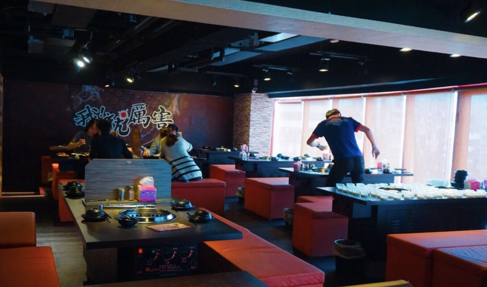
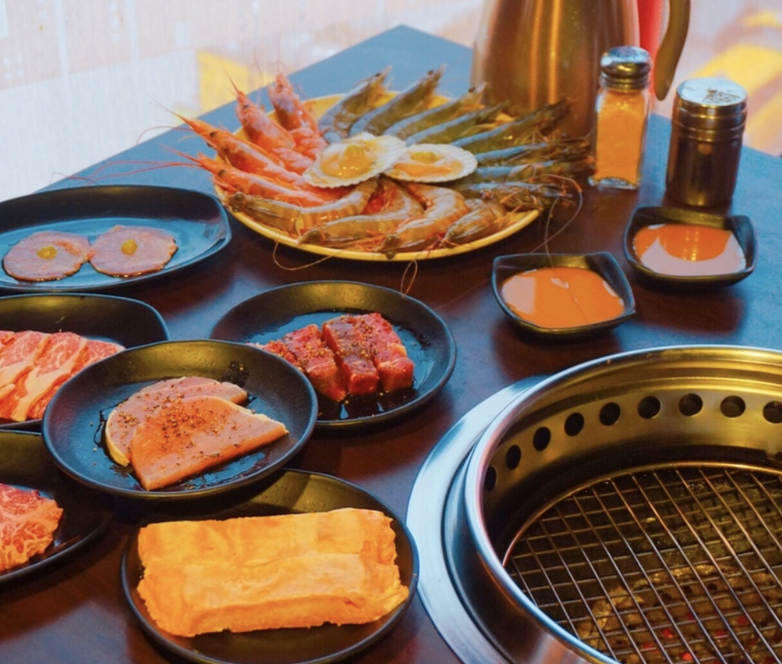
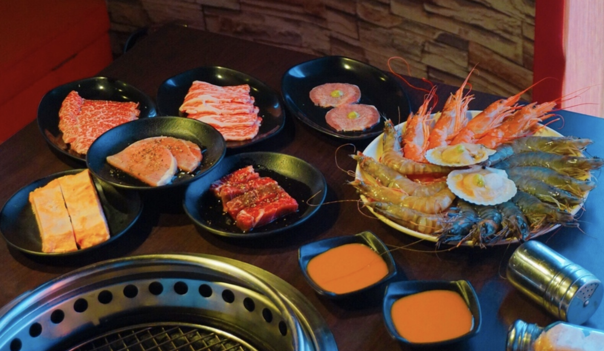
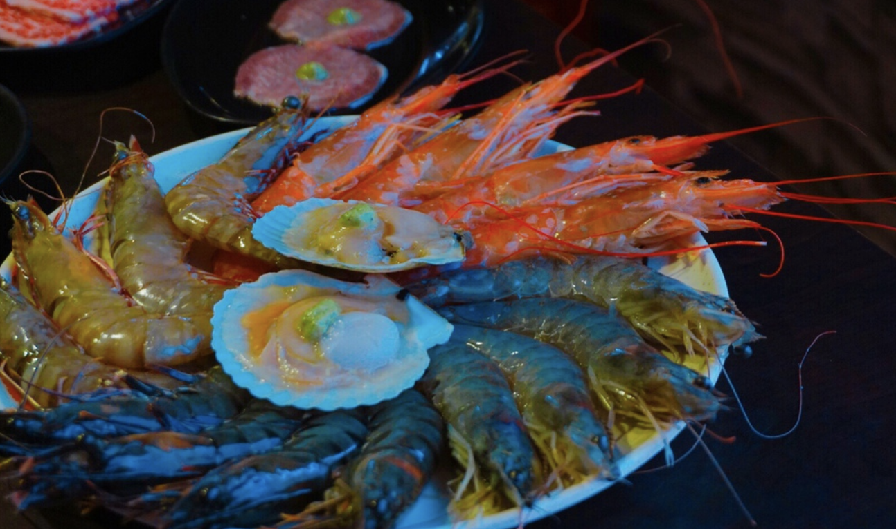
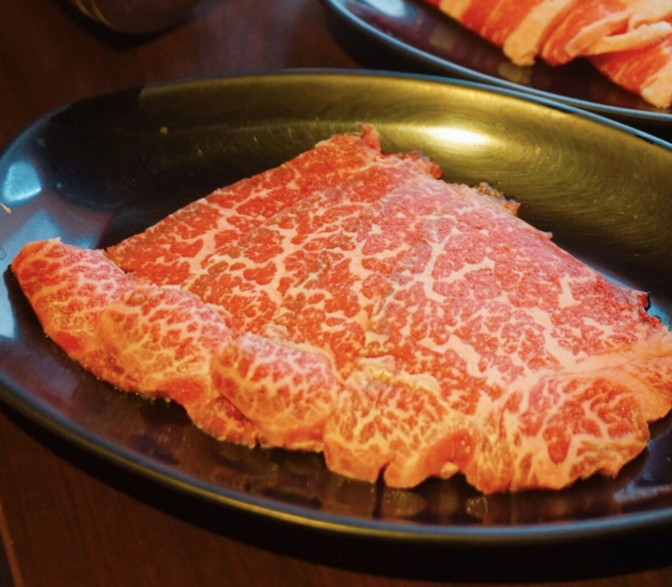
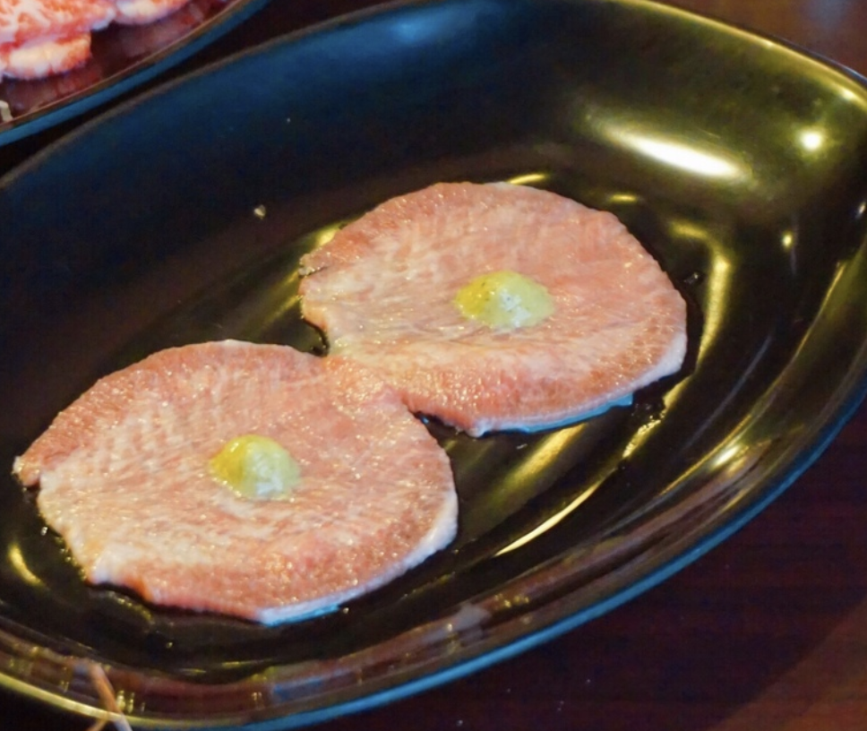
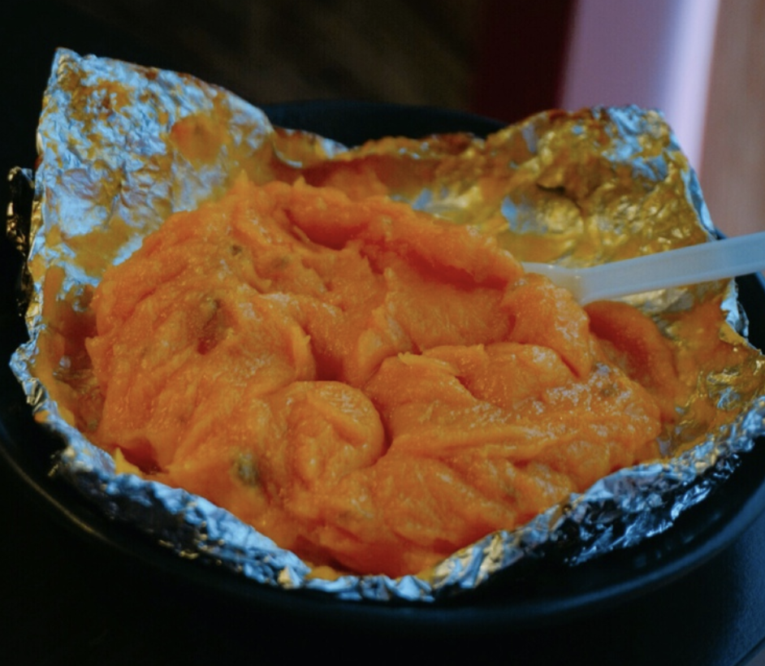

來來來先看影片
以形容詞命名的燒肉店_我！就厲害，店名讓人印象深刻
以三種價位鎖定不同客群，並挾著COLD STONE、麒麟BarBeer無限暢食
天花板以黑色為底，落上淺紅色長椅，
並擁有兩個用餐樓層，可容納百來位顧客。

簡單說明三種方案價位：
$455+10%基本已相當足夠，各式小菜、肉品選擇多樣化
$550+10%多了更厚實的肉品選擇，甜點與湯品也新增一大輪
$750+10%建議喜愛海鮮的饕客可以直上，蝦類選擇更是多元
※ 以上麒麟Bar Beer皆可無限暢飲 ※



點了一堆真心會吃

和牛吃得我笑呵呵啊

窩就是喜歡跟牛喇機爽爽der

平常我是根本不碰甜點的人，可是這個我真的是大推，口感綿密，吃了帶你上天堂
因為是平日冷門時段用餐，烤網非常勤勞更換
並且有體驗桌邊代烤服務_所以整體用餐品質值得肯定
若沒有特別喜愛海鮮，建議點上$550方案
可無限暢飲麒麟Bar Beer、享用COLDSTONE冰淇淋
是目前吃到飽品質、誠意相當的店家。
店名： 我!就厲害/西門珍饌店
電話：02-2331-5527
地址：台北市萬華區漢中街127號
營業時間：12:00 – 02:00